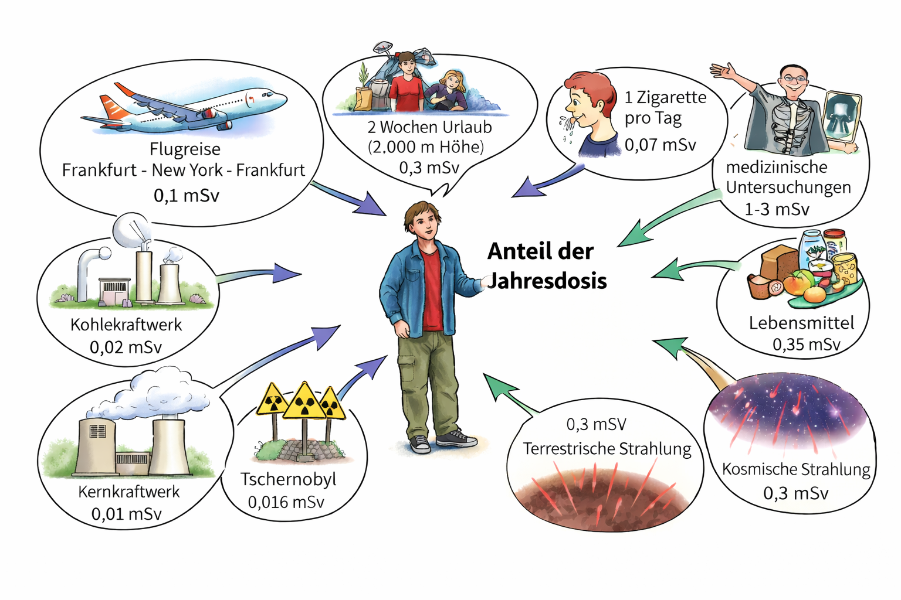
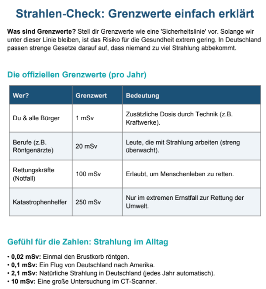

⚡ Was passiert im Körper?
Wenn radioaktive Strahlung auf deinen Körper trifft, gibt sie Energie an die Zellen ab. Man sagt: Die Strahlung wird absorbiert. Diese Energie kann Moleküle zerbrechen, Gifte bilden und sogar die DNS (Erbinformation) in deinen Zellen verändern - das nennt man eine Mutation.
Dein Körper hat zum Glück eigene Reparatursysteme. Kleine Schäden kann er oft selbst reparieren. Aber wenn die Strahlung zu stark ist oder zu lange dauert, wird der Körper überlastet - dann entstehen Schäden.

Das Bild zeigt, welche Schäden Strahlung im Körper verursachen kann.
Beispiel: Bei sehr hoher Dosis können Übelkeit und Haarausfall auftreten, bei niedriger Dosis oft keine sofortigen Beschwerden.

Hier siehst du den Weg der Strahlung: Sie trifft den Körper und gibt Energie ab.
Beispiel: Beim Röntgen im Krankenhaus wird nur kurz und gezielt bestrahlt, damit das Risiko klein bleibt.

Gewebe bedeutet: viele Zellen zusammen, zum Beispiel Haut oder Organe.
Beispiel: Ein Sonnenbrand ist auch Strahlungsschaden (UV-Strahlung) - bei radioaktiver Strahlung können Schäden noch stärker sein.
Frühschäden
Treten sofort oder nach kurzer Zeit auf: Übelkeit, Erbrechen, Haarausfall, Entzündungen. Bei sehr hoher Dosis: Strahlenkrankheit und Tod.
Spätschäden
Treten erst nach Monaten oder Jahren auf: Krebs (z.B. Leukämie/Blutkrebs), Schädigung der Erbinformation. Können auch bei langanhaltender niedriger Strahlung auftreten.
Genetische Schäden
Wenn die DNS in den Keimzellen (Ei- oder Samenzellen) verändert wird, können Missbildungen bei Nachkommen und Schäden in Folgegenerationen entstehen.
Merke
Radioaktive Strahlung kann beim Menschen unterschiedlichste Schäden auslösen - von harmlosen Reparaturen bis zu tödlicher Strahlenkrankheit.
📏 Strahlendosis - wie misst man die Gefahr?
Nicht jede Strahlung ist gleich gefährlich. Es kommt auf die Menge und die Art der Strahlung an. Um die Gefahr zu messen, gibt es die Strahlendosis in der Einheit Sievert (Sv).
Wichtig: α-Strahlung ist 20-mal gefährlicher als β- oder γ-Strahlung bei gleicher Energie! Deshalb multipliziert man bei α-Strahlung die Energiedosis mit dem Faktor 20.
Im Alltag benutzt man die kleinere Einheit Millisievert (mSv) = 1/1000 Sievert.
| Dosis (Sv) | Wirkung bei kurzzeitiger Bestrahlung |
|---|---|
| bis 0,5 | Keine Langzeitwirkung |
| 0,8 - 1,2 | Bei 5-10%: einen Tag Müdigkeit und Erbrechen |
| 1,3 - 1,7 | Bei ca. 25%: einen Tag Müdigkeit und Erbrechen |
| 1,8 - 2,6 | Bei ca. 25%: Müdigkeit und Erbrechen, einzelne Todesfälle |
| 2,7 - 3,3 | Bei fast allen Erbrechen und Übelkeit, ca. 20% Todesfälle innerhalb einiger Wochen |
| 3,4 - 5,4 | Erbrechen am ersten Tag, ca. 50% Todesfälle innerhalb eines Monats |
| ab 5,5 | Schnell auftretende Übelkeit und Erbrechen, selten bis keine Überlebenden |
🌍 Strahlung im Alltag
Jeder Mensch ist ständig einer natürlichen Strahlenbelastung ausgesetzt. Die durchschnittliche Jahresdosis in Deutschland beträgt etwa 2,1 mSv. Dazu kommen noch Belastungen durch Technik und Medizin.

Das Bild vergleicht typische Strahlung aus dem Alltag.
Beispiel: Ein Langstreckenflug bringt mehr Strahlung als ein normaler Tag zu Hause.

Grenzwerte sind Sicherheitsregeln.
Beispiel: In Berufen mit Strahlung tragen Erwachsene Dosimeter, damit der Grenzwert nicht überschritten wird.

DNS ist die Bauanleitung jeder Zelle.
Beispiel: Ein kleiner Fehler kann repariert werden - viele Fehler können später Krankheiten wie Krebs auslösen.
🛡️ Grenzwerte und Schutz
Die Strahlenschutzverordnung legt fest, wie viel Strahlung erlaubt ist. Unter 0,25 mSv Schwellenwert gibt es in der Regel keine nachhaltige Schädigung.
| Körperbereich | Bevölkerung (mSv/Jahr) | Arbeitsplatz (mSv/Jahr) |
|---|---|---|
| Ganzkörper, Knochenmark | 1 | 20 |
| Hände, Unterarme, Füße | 3,6 | 500 |
| Haut, Knochen, Schilddrüse | 1,8 | 300 |
| Alle anderen Organe | 0,9 | 150 |
Was bedeutet die Tabelle? Sie zeigt, wie viel Strahlung pro Jahr erlaubt ist.
mSv/Jahr heißt: Millisievert pro Jahr. Das ist die Einheit für Strahlung.
Bevölkerung sind normale Menschen. Arbeitsplatz sind Erwachsene, die beruflich mit Strahlung arbeiten und geschützt werden.
Je kleiner die Zahl, desto besser für den Körper.
Merke
Jeder Mensch ist einer natürlichen Strahlenbelastung ausgesetzt. Strahlung wird vom Körper absorbiert. Die Strahlendosis (Einheit: Sievert) gibt an, wie gefährlich die Strahlung ist.
Lückentext
Klicke auf eine Lücke, dann auf das passende Wort.
Zuordnung
Klicke auf eine Karte, dann auf das passende Feld.
Wortkarten
Schiebe die Karten in die Lücken!
KI-Recherche
Nutze ChatGPT, Gemini oder Claude.ai. Gib den Prompt selbst ein - die KI soll in 3 Sätzen antworten.
Tschernobyl und die Folgen
Welche biologischen Folgen hatte der Reaktorunfall von Tschernobyl für die Menschen in der Umgebung?
Schutz vor Strahlung
Wie kann man sich vor radioaktiver Strahlung schützen?
Strahlung in der Medizin
Strahlung wird auch zur Heilung eingesetzt. Wie funktioniert eine Strahlentherapie bei Krebs?
Abschlusstest - Note
Beantworte alle 20 Fragen. Du darfst das Material oben auf der Seite verwenden.
Antworten können nicht ausgebessert werden!